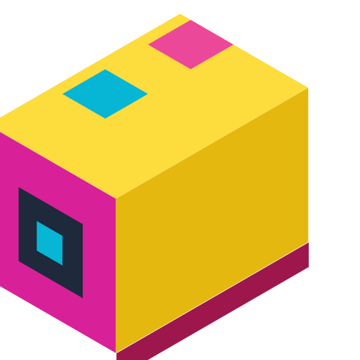

Spike
Mecatrònica, engranatges i sensors d'alta precisió de LEGO Education
LEGO Education SPIKE Prime és un conjunt de construcció STEAM per a primària avançada i secundària. El hub gran té 6 ports; el conjunt Prime inclou motors angulars i sensors de distància, color i força. SPIKE Essential té maquinari i accessoris diferents: adapta la proposta al conjunt que hi ha al centre.
Construir, mesurar i iterar
SPIKE combina construcció, una unitat programable, motors i sensors per proposar preguntes d'enginyeria que es poden provar. El professorat pot demanar un moviment quantificat o una decisió basada en lectura; en tots dos casos, l'equip necessita predir què canviarà abans d'ajustar el muntatge.
Organització de la sessió
- Explora els ports i els connectors amb el mateix model de robot que faran servir els equips.
- Acorda una trajectòria curta i registra el punt de partida i el programa inicial.
- Assigna rotativament disseny, programació, proves i quadern de laboratori.
- Compara almenys dues execucions i fes canviar una sola variable a cada prova.
Pensament d'enginyeria
Després del repte, demana que identifiquin una limitació: adherència de les rodes, llum ambient, angle d'un sensor o temps de recorregut. Una solució útil explica tant el resultat com les condicions en què l'han provada.
La denominació «SPIKE» cobreix diferents conjunts. Aquestes propostes de motors angulars i sensors parteixen de SPIKE Prime: comprova la versió del hub i les peces disponibles. LEGO Education ha anunciat la retirada comercial de SPIKE Essential i Prime, però mantindrà el suport de l’aplicació fins al 30 de juny de 2031. Si el centre ja té el kit, pot continuar fent-lo servir a l’aula. Consulta la fitxa de disponibilitat i suport de LEGO Education i la pàgina tècnica oficial de SPIKE Prime.
Recursos oficials del fabricant
Per consultar materials, compatibilitat i instruccions actualitzades. Les activitats de Robòtica200 són adaptacions pròpies.
- Competition Ready (SPIKE Prime)Unitat de missions, moviment controlat, sensors i disseny iteratiu.
- SPIKE Prime Activity BriefsReptes oberts en què hi ha diverses solucions possibles.
Estat i disponibilitat del kit: LEGO Education ha anunciat la retirada comercial de SPIKE Essential i SPIKE Prime a partir del 30 de juny de 2026. Si el centre ja té el kit, el pot continuar fent servir; el suport de l’aplicació està previst fins al 30 de juny de 2031. Informació de LEGO Education
Tutorials de Spike
Tutorials pas a pas pensats per a l'ús directe a l'aula.